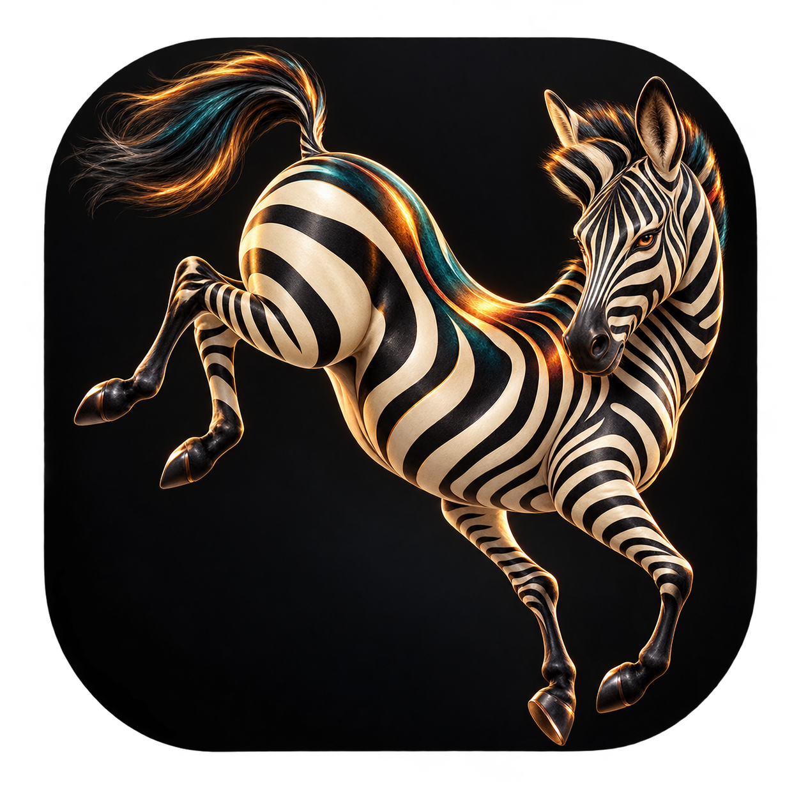

Drop your videos.
Add one file or a batch. Zebra checks for supported HDR before converting.
Zebra · HDR to SDR for Mac
Turn HDR videos into SDR copies.
A small drop window. Automatic settings.
Your originals, untouched.
Apple Silicon · macOS 14+ · v0.2.0 preview
One-time FFmpeg setup required.

Add one file or a batch. Zebra checks for supported HDR before converting.
One button. Tone mapping, encoding and verification run locally on your Mac.
Find the SDR copies beside your originals, with resolution, audio, subtitles and chapters retained.
Free and open source
No account. No subscription. No uploads.
The conversion tools live on your Mac.
With Homebrew installed, run this in Terminal:
brew install ffmpeg-fullUnzip it and move the app into Applications.
Download for Apple SiliconThis preview is not notarized. macOS may require you to approve it under System Settings → Privacy & Security → Open Anyway.
What to expect
The zebra is a metaphor. Your videos stay in color; tone mapping adapts HDR highlights and colors for SDR playback.
HDR10/PQ and HLG with recognized BT.2020 color metadata. Dolby Vision, ambiguous HDR metadata and multiple video streams are not supported in this preview. Already-SDR videos are left alone.
A 10-bit HEVC video in an MKV file, saved beside the original. MKV retains audio, subtitles, chapters and attachments. Use an MKV-capable player such as IINA or VLC; QuickTime does not natively support MKV.
The app preserves resolution and chooses a bitrate automatically. HDR-to-SDR changes the image’s highlight range, and encoding is lossy. This early preview has pipeline tests, but broad real-world visual-quality testing is still in progress.
It stays untouched. Existing output filenames are never overwritten. The app checks the new file before marking it ready. You can cancel a conversion without deleting the original.